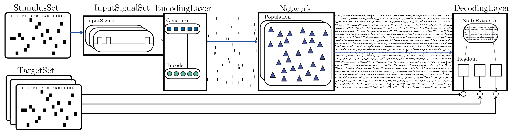
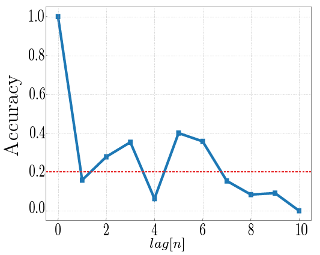

Stimulus processing
This complex example shows the application of the full setup to perform a computational experiment. A random stimulus sequence of length T is constructed and encoded as a sequence of spatiotemporal spike patterns (each stimulus is converted into a fixed set of Poissonian spike trains - an instance of "frozen noise"). These input spikes are delivered to the main network (a standard balanced network) via spike generators. The simulation runs in steps, iterating through the input sequence and gathering samples of the chosen population state variable, at stimulus offset (default).
NOTE: we provide two different, dedicated functions to iterate stimulus sequences (see the auxiliary module). However, in order to use the faster implementation, which relies on modifying how the recording devices sample the population activity, you need an adapted version of the multimeter model (see corresponding issue here and pull request here)
After the simulation is completed, the population state in response to the input is compiled in an NxT state matrix, a subset of which is used to train a set of linear readouts, using ridge regression. The remaining subset is used to test the readout accuracy. In this setup, we use 10 parallel readouts, whose target outputs are delayed copies of the input sequence (i.e. we measure the ability to use the system state in response to stimulus n to determine whether it contains information about stimulus history: n-1, n-2, ...).
The complete setup and illustrative results are provided below: 
To run this example execute:
python main.py -f ./projects/examples/parameters/spike_pattern_input.py -c stimulus_processing --extra plot=True display=False save=True
If all goes well, the simulation should run and a detailed output is provided, summarizing what is being done. After completion, since save=True, all the relevant data and results are stored in the output folder, including a copy of the original parameters file, a figure similar to that below (main result), the stimulus set used and the state matrices. Additionally, the console output should show the key results.

You can retrieve the data using the provided stimulus_processing_task in examples/read_data/, which also serves as an example of how to load and harvest simulation results.